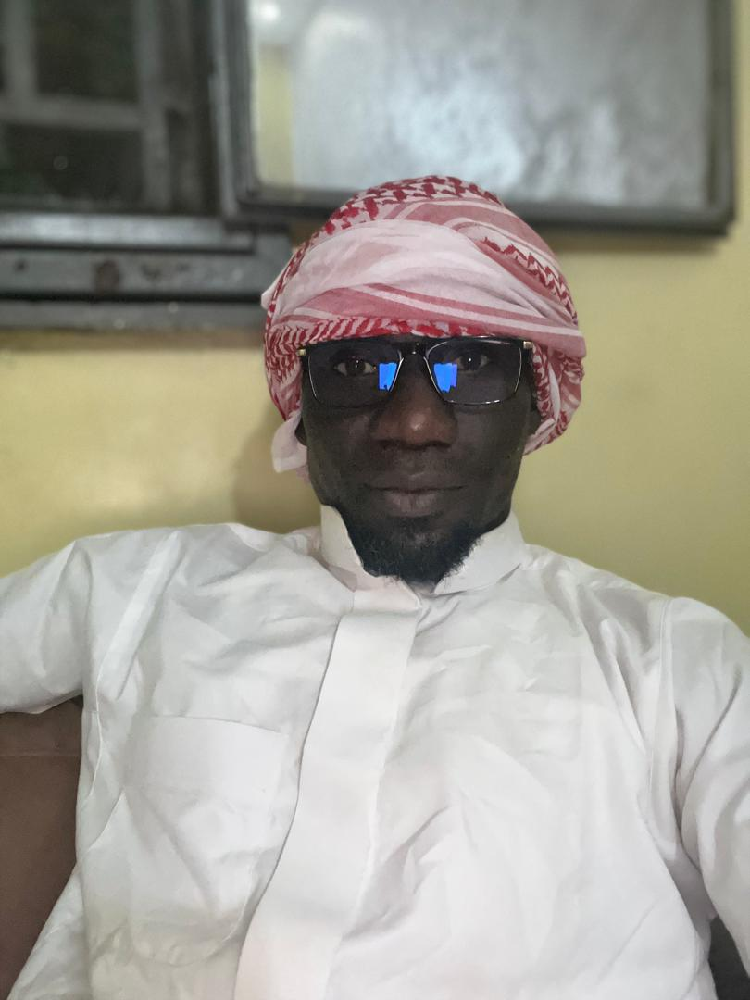
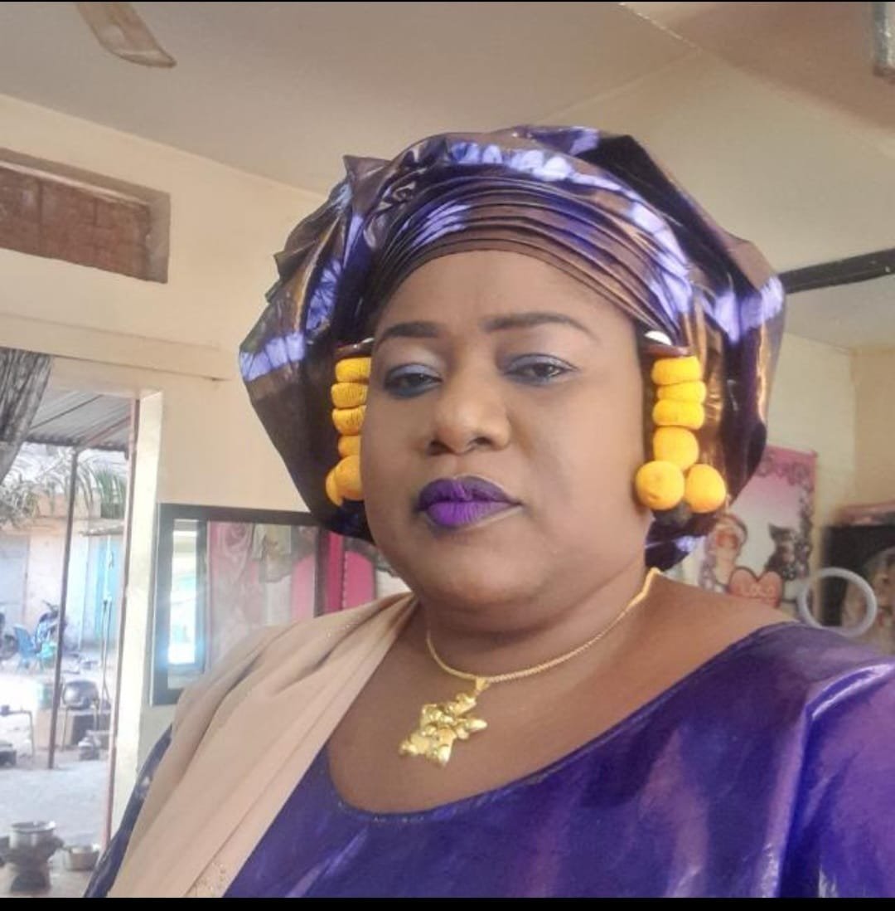
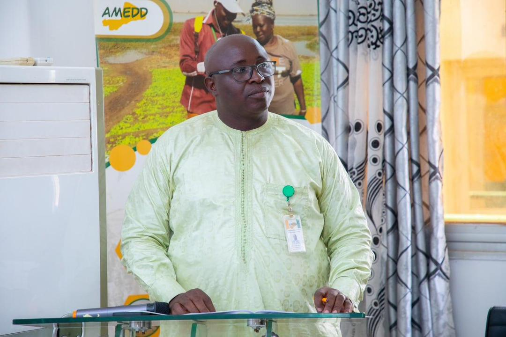
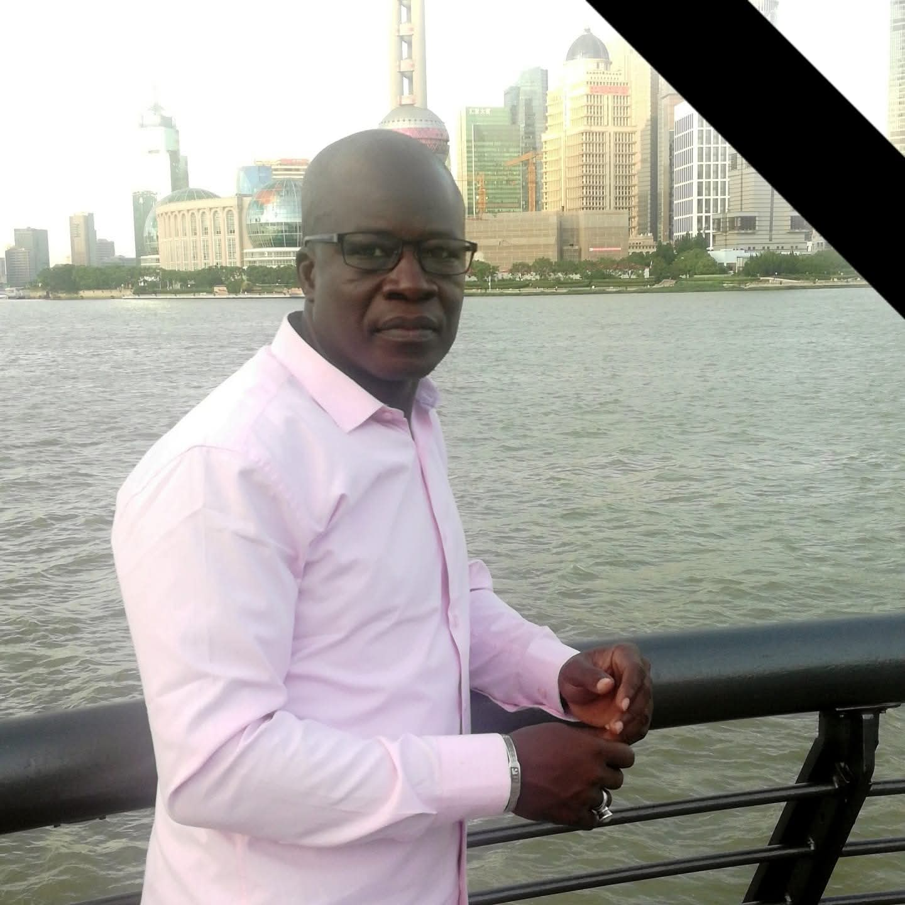
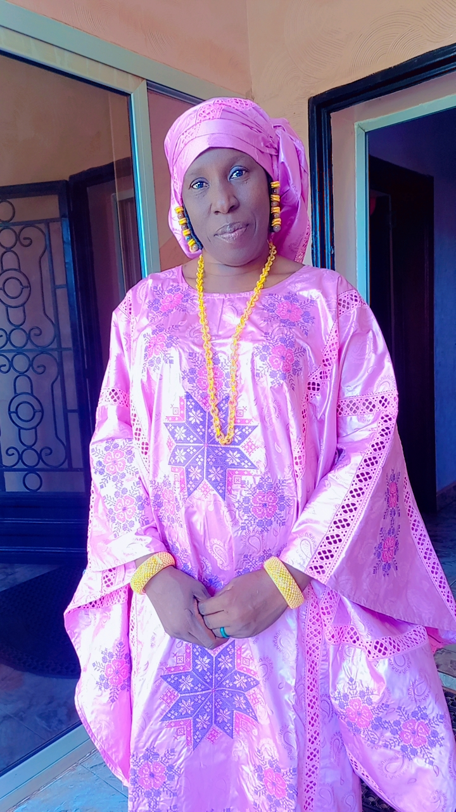

Les seize membres élus en Assemblée Générale constitutive pour piloter les activités de l'amicale.
Bureau élu le 7 mars 2020 à Koutiala, conformément aux statuts.

Officier de Sapeur-Pompier · Bamako

Socio-anthropologue · Bamako

Professeur d'enseignement général · Bamako

Juriste · Koutiala

Professeur d'enseignement supérieur · Bamako

Inspecteur des services économiques · Bamako

Sociologue · Bamako

Gestionnaire · Bamako

Journaliste · Bamako

Planificateur · Bamako

Sociologue · Sikasso

Sociologue · Bamako

Magistrat · Bamako

Maître du second cycle · Bougouni

Juriste · Bamako

Sociologue · Bamako
Premier responsable de l'association, il la représente dans tous ses actes civiques et juridiques et préside les assemblées et réunions du Bureau.
Tient les procès-verbaux, rédige les correspondances et assure la tenue des archives de l'association.
Aucun retrait de fonds sans la signature conjointe du Trésorier et du Président ; la Commissaire aux comptes surveille entrées et sorties.